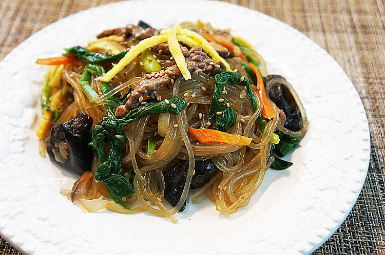

중 하나인 잡채
버무리는 그 자리에서 3그릇 흡입가능

중 하나인 잡채
버무리는 그 자리에서 3그릇 흡입가능
맛잘알 ㅇㅈ
잡채밥 개년 탄수화물 중복이라 내가 이걸 먹나봐라 다짐했다가도 결국 한입 먹고나면 한그릇 다 뿌시고 후회하마는 마약같은 개같은것
여기도 개틀딱 사이트 맞다고 느끼는게
뭔 음식만 나오면 혈당이니 췌장이니
존나 호들갑 떠는 댓글들 꼭 있음 ㅋㅋ
틀딱은 자기가 틀딱인 줄 모름 ㅋㅋㅋㅋ
(대충 스파이크가 어쩌구 하는 댓글)
식으면 더 미침
한 소쿠리 다처먹음 98키로임
한 두접시 마셔야함
난 잡채랑 소불고기 섞어 먹는게 그리 맛있더라
당폭발이라 싫어함
맛도 라면에 밀림
녹두전
하 잡채먹고싶다 누가 해줘
잡채 많이들 좋아하던데 나는 별로 안좋아함
당면을 일단 안좋아하고 식감이 제각각이라 별로야... 니가 맛있는 집을 안가봐서 그런다하면 추천해줘봐라
우리집?
우리집이 제일 맛있긴 해
아 배고퍼 ㅅㅂ
냉장고에서 꺼내서 전자레인지에 돌리기 전에 참기름, 고추장 좀 넣고 돌리면 아주 그냥 맛있는 누렁이 밥이 된단 말이지요
아 쇼발 배고파..
부모님 맞벌이라 어릴때 냉장고 잇던 차가운 잡채 먹엇어서 식은것도 좋아함
잡채가 음식중에 간 맞추기 제일 어려운 음식인데 , 간 안 맞으면 거들떠도 안봄